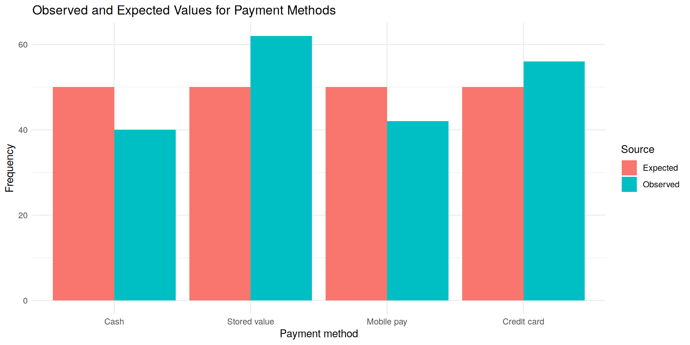

[1] 6.88Statistics
Chapter 11: Other Chi-Square Tests
Yu-You Liou
Shih Chien University
2026-09-20
Overview
Chapter 11 uses the chi-square distribution to test hypotheses about frequency distributions rather than about means, proportions or variances.
| Section | Topics |
|---|---|
| 11-1 | Goodness-of-fit test; observed vs. expected frequencies; \text{d.f.} = k - 1; procedure table; test of normality |
| 11-2 | Contingency tables; independence test; expected values; \text{d.f.} = (R-1)(C-1); homogeneity of proportions; Yates correction |
Chapter Objectives
After completing this chapter, you should be able to
- Test a distribution for goodness of fit, using chi-square.
- Test two variables for independence, using chi-square.
- Test proportions for homogeneity, using chi-square.
Introduction
The chi-square distribution was used in Chapters 7 and 8 to find a confidence interval for a variance or standard deviation and to test a hypothesis about a single variance or standard deviation. It can also be used for tests concerning frequency distributions.
- If shoppers are given a choice of payment methods, will each method be used with the same frequency? — a goodness-of-fit question.
- Is the type of complaint a customer files independent of the store format? — a question of independence of two variables.
- Is the proportion of members who hold the premium tier the same in every regional market? — a question of homogeneity of proportions.
All three tests are based on \chi^2 = \sum \dfrac{(O-E)^2}{E} and all three are right-tailed.
Section 11-1: Test for Goodness of Fit
Testing Whether a Distribution Fits a Pattern
In addition to being used to test a single variance, the chi-square statistic can be used to see whether a frequency distribution fits a specific pattern. A retailer may wish to see whether shoppers show a preference for a specific way of paying; a logistics planner may wish to see whether parcels are collected more often on some days than on others; a call centre may want to see whether it receives more calls at certain times of the day than at others.
Characteristics of the Chi-Square Distribution
- The chi-square distribution is a family of curves based on the degrees of freedom.
- The chi-square distributions are positively skewed.
- All chi-square values are greater than or equal to zero.
- The total area under each chi-square distribution is equal to 1.
The Chi-Square Goodness-of-Fit Test
Chi-Square Goodness-of-Fit Test
The chi-square goodness-of-fit test is used to test the claim that an observed frequency distribution fits some given expected frequency distribution.
Suppose you wanted to see whether shoppers at a convenience-store chain split evenly across four ways of paying. A random sample of 200 transactions showed the following distribution (hypothetical data).
| Payment method | Cash | Stored value | Mobile pay | Credit card |
|---|---|---|---|---|
| Observed | 40 | 62 | 42 | 56 |
Observed and Expected Frequencies
Observed and Expected Frequency
Since the frequencies for each payment method were obtained from a sample, these actual frequencies are called the observed frequencies. The frequencies obtained by calculation (as if there were no preference) are called the expected frequencies.
Two Rules for Computing the Expected Frequencies
- If all the expected frequencies are equal, the expected frequency E can be calculated by E = n/k, where n is the total number of observations and k is the number of categories.
- If all the expected frequencies are not equal, the expected frequency E can be calculated by E = n \cdot p, where n is the total number of observations and p is the probability for that category.
The Completed Table for the Payment Data
If there were no difference, you would expect 200 \div 4 = 50 transactions in each category.
| Frequency | Cash | Stored value | Mobile pay | Credit card |
|---|---|---|---|---|
| Observed | 40 | 62 | 42 | 56 |
| Expected | 50 | 50 | 50 | 50 |
Because of sampling error, observed frequencies almost always differ from expected ones. Is the difference significant, or due to chance? State H_0 as no difference:
- H_0: There is no difference in the transactions for each payment method.
- H_1: There is a difference in the transactions for each payment method.
Formula for the Chi-Square Goodness-of-Fit Test
Test Statistic and Degrees of Freedom
\chi^2 = \sum \frac{(O - E)^2}{E}
with degrees of freedom equal to the number of categories minus 1, and where
- O = observed frequency
- E = expected frequency
When there is perfect agreement between the observed and the expected values, \chi^2 = 0; also \chi^2 can never be negative. The test is right-tailed because “H_0: Good fit” and “H_1: Not a good fit” mean that \chi^2 will be small in the first case and large in the second case.
In the payment example there are four categories, so \text{d.f.} = 4 - 1 = 3: the number of transactions in each of the first three categories is free to vary, but for the sum to be 200 the number in the last category is fixed.
Assumptions and the Small-Expected-Frequency Rule
Assumptions for the Chi-Square Goodness-of-Fit Test
- The data are obtained from a random sample.
- The expected frequency for each category must be 5 or more.
Caution
Statisticians require expected frequencies of at least 5 because the chi-square distribution is continuous whereas the goodness-of-fit test is discrete. The continuous distribution is a good approximation only when the expected value for each class is at least 5. If an expected frequency of a class is less than 5, that class can be combined with another class so that the expected frequency is 5 or more.
Procedure Table: The Chi-Square Goodness-of-Fit Test
Five Steps
Step 1. State the hypotheses and identify the claim.
Step 2. Find the critical value from Table A-6. The test is always right-tailed.
Step 3. Compute the test statistic — find the sum of the \dfrac{(O-E)^2}{E} values.
Step 4. Make the decision.
Step 5. Summarize the results.
In R the critical value is qchisq(1 - alpha, df) and the P-value is pchisq(chi2, df, lower.tail = FALSE).
Example 11-1
Payment Methods at a Convenience-Store Chain
Is there enough evidence to reject the claim that the four payment methods are used equally often? Use \alpha = 0.05 (hypothetical data).
| Frequency | Cash | Stored value | Mobile pay | Credit card |
|---|---|---|---|---|
| Observed | 40 | 62 | 42 | 56 |
Example 11-1
Solution
Step 1. State the hypotheses and identify the claim.
H_0: There is no difference in the number of transactions for each payment method (claim).
H_1: There is a difference in the number of transactions for each payment method.
Step 2. Find the critical value. The degrees of freedom are 4 - 1 = 3, and at \alpha = 0.05 the critical value from Table A-6 is 7.815.
Step 3. Compute the test statistic. The expected values are found by E = n/k = 200/4 = 50.
\chi^2 = \frac{(40-50)^2}{50} + \frac{(62-50)^2}{50} + \frac{(42-50)^2}{50} + \frac{(56-50)^2}{50} = 2.00 + 2.88 + 1.28 + 0.72 = 6.88
Example 11-1
Example 11-1
Solution
Step 4. Make the decision. The decision is to not reject the null hypothesis since 6.88 < 7.815.
Step 5. Summarize the results. There is not enough evidence to reject the claim that there is no difference in the number of transactions for each payment method.
P-value. Looking across the row with \text{d.f.} = 3 of Table A-6, the test statistic 6.88 lies between 6.251 and 7.815, so 0.05 < P\text{-value} < 0.10; R gives P = 0.0758. Since the P-value is greater than 0.05, the decision is again to not reject H_0.
Observed and Expected Values in R
Draw figure — compare the observed and expected values for the payment data.
payment_fit <- data.frame(
Method = factor(names(payment_counts), levels = names(payment_counts)),
Observed = as.numeric(payment_counts),
Expected = expected_equal)
payment_long <- pivot_longer(payment_fit, -Method,
names_to = "Source", values_to = "Frequency")
payment_plot <- ggplot(payment_long, aes(x = Method, y = Frequency, fill = Source)) +
geom_col(position = "dodge") +
labs(title = "Observed and Expected Values for Payment Methods",
x = "Payment method", y = "Frequency") +
theme_minimal()Observed and Expected Values in R
Output figure

When the observed and expected values are close together, the test statistic is small and H_0 is not rejected — “a good fit”. When they are far apart, the test statistic is large and H_0 is rejected — “not a good fit”.
Example 11-2
Delivery Options at an E-Commerce Warehouse
A logistics manager believes that parcels leave a Taipei e-commerce warehouse in these proportions: 45% convenience-store pickup, 30% home delivery, 15% locker pickup, and 10% same-day courier. A random sample of 400 parcels shipped last month contained 208 convenience-store pickups, 99 home deliveries, 61 locker pickups and 32 same-day courier parcels. At \alpha = 0.10, test the claim that the proportions are the same as the manager believes (hypothetical data).
Example 11-2
Solution
Step 1. State the hypotheses and identify the claim.
H_0: The proportion of parcels shipped by convenience-store pickup is 45%, by home delivery is 30%, by locker pickup is 15%, and by same-day courier is 10% (claim).
H_1: The distribution is not the same as stated in the null hypothesis.
Step 2. Find the critical value. Since \alpha = 0.10 and \text{d.f.} = 4 - 1 = 3, the critical value is 6.251.
Step 3. Compute the test statistic. The expected values are E = n \cdot p: 0.45(400) = 180, 0.30(400) = 120, 0.15(400) = 60, 0.10(400) = 40.
| Frequency | Store pickup | Home delivery | Locker | Courier |
|---|---|---|---|---|
| Observed | 208 | 99 | 61 | 32 |
| Expected | 180 | 120 | 60 | 40 |
\chi^2 = \frac{(208-180)^2}{180} + \frac{(99-120)^2}{120} + \frac{(61-60)^2}{60} + \frac{(32-40)^2}{40} = 9.647
Example 11-2
Solution
Step 3 in R — with unequal expected frequencies the claimed proportions are passed to chisq.test().
store_pickup home_delivery locker courier
180 120 60 40
Chi-squared test for given probabilities
data: parcel_counts
X-squared = 9.6472, df = 3, p-value = 0.02182[1] 6.251389Example 11-2
Solution
Step 4. Make the decision. Since 9.647 > 6.251, the decision is to reject the null hypothesis.
Step 5. Summarize the results. There is enough evidence to reject the null hypothesis. It can be concluded that the proportions are significantly different from those stated by the manager.
Example 11-3
Product Mix of Cross-Border Orders
A cross-border seller states that orders placed on its Taiwan storefront are 55% apparel, 30% cosmetics and 15% household goods. A random sample of 200 orders from the past quarter contained 92 apparel orders, 68 cosmetics orders and 40 household-goods orders. At \alpha = 0.10, test the claim that the percentages are as stated (hypothetical data).
Example 11-3
Solution
Step 1. State the hypotheses and identify the claim.
H_0: The orders are distributed as follows: 55% apparel, 30% cosmetics and 15% household goods (claim).
H_1: The distribution is not the same as stated in the null hypothesis.
Step 2. Find the critical value. Since \alpha = 0.10 and \text{d.f.} = 3 - 1 = 2, the critical value is 4.605.
Step 3. Compute the test statistic. The expected values use E = n \cdot p: 200(0.55) = 110, 200(0.30) = 60, 200(0.15) = 30.
| Frequency | Apparel | Cosmetics | Household goods |
|---|---|---|---|
| Observed | 92 | 68 | 40 |
| Expected | 110 | 60 | 30 |
\chi^2 = \frac{(92-110)^2}{110} + \frac{(68-60)^2}{60} + \frac{(40-30)^2}{30} = 2.945 + 1.067 + 3.333 = 7.345
Example 11-3
Solution
Step 3 in R
apparel cosmetics household
110 60 30
Chi-squared test for given probabilities
data: order_counts
X-squared = 7.3455, df = 2, p-value = 0.02541[1] 4.60517Step 4. Reject the null hypothesis, since 7.345 > 4.605.
Step 5. There is enough evidence to reject the claim that the order mix is 55% apparel, 30% cosmetics and 15% household goods.
Test of Normality (Optional)
The chi-square goodness-of-fit test can be used to test a variable to see if it is normally distributed. The null and alternative hypotheses are
- H_0: The variable is normally distributed.
- H_1: The variable is not normally distributed.
The procedure is somewhat complicated. It involves finding the expected frequencies for each class of a frequency distribution by using the standard normal distribution; the observed frequencies are then compared with those expected frequencies using the chi-square goodness-of-fit test.
Degrees of Freedom for the Test of Normality
The degrees of freedom equal the number of categories minus 3, since 1 degree of freedom is lost for each parameter that is estimated. Here both the mean and the standard deviation are estimated from the data, so 2 additional degrees of freedom are needed.
Example 11-4
Customs Clearance Times
A freight forwarder records the time, in minutes, needed to clear each of 200 randomly selected import declarations. Use chi-square to determine whether the variable shown in the frequency distribution is normally distributed. Use \alpha = 0.05 (hypothetical data).
| Boundaries (minutes) | Frequency |
|---|---|
| 24.5–39.5 | 18 |
| 39.5–54.5 | 62 |
| 54.5–69.5 | 72 |
| 69.5–84.5 | 30 |
| 84.5–99.5 | 14 |
| 99.5–114.5 | 4 |
| Total | 200 |
Example 11-4
Solution
Step 1. H_0: The variable is normally distributed. H_1: The variable is not normally distributed.
Step 2 — find the mean and standard deviation. Each observation is represented by its class midpoint X_m (32, 47, 62, 77, 92, 107), so the grouped mean and standard deviation are just mean() and sd() of the repeated midpoints (s approximates \sigma).
mean sd
59.90 16.88 The mean is 59.9 minutes and the standard deviation is 16.88 minutes.
Example 11-4
Solution
Step 3 — find the areas and the expected frequencies. Each boundary is converted to a z score and the corresponding normal area is multiplied by n = 200; the first and last classes are left open. Table A-4 gives the same areas by hand.
[1] 0.1135 0.2611 0.3407 0.2123 0.0630 0.0095[1] 22.7 52.2 68.1 42.5 12.6 1.9Example 11-4
Solution
The areas and expected frequencies are
| Class | z scores | Area | E = \text{area} \times 200 |
|---|---|---|---|
| below 39.5 | z < -1.21 | 0.1135 | 22.7 |
| 39.5–54.5 | -1.21 < z < -0.32 | 0.2611 | 52.2 |
| 54.5–69.5 | -0.32 < z < 0.57 | 0.3407 | 68.1 |
| 69.5–84.5 | 0.57 < z < 1.46 | 0.2123 | 42.5 |
| 84.5–99.5 | 1.46 < z < 2.35 | 0.0630 | 12.6 |
| above 99.5 | z > 2.35 | 0.0095 | 1.9 |
Since the expected frequency for the last category is less than 5, it is combined with the previous category: O = 18 and E = 14.5.
Example 11-4
Solution
Step 3 — compute the test statistic. The table now has five categories.
| O | 18 | 62 | 72 | 30 | 18 |
|---|---|---|---|---|---|
| E | 22.7 | 52.2 | 68.1 | 42.5 | 14.5 |
[1] 7.516[1] 0.0233Summing the five \dfrac{(O-E)^2}{E} terms gives \chi^2 = 7.516 with P = 0.0233.
Example 11-4
Solution
Steps 4 and 5. The critical value with \text{d.f.} = 5 - 3 = 2 and \alpha = 0.05 is 5.991, so the null hypothesis is rejected. Hence the clearance times can be considered not normally distributed.
Note. At \alpha = 0.01 the critical value is 9.210 and the null hypothesis would not be rejected; the variable could then be considered normally distributed. It is therefore important to decide which level of significance to use before conducting the test.
Flavour Preference in R
A beverage chain asks 100 randomly selected customers which of five flavours they prefer, and tests the claim that customers show no preference, at \alpha = 0.05 (hypothetical data).
| Frequency | Pearl milk | Brown sugar | Matcha | Taro | Fruit tea |
|---|---|---|---|---|---|
| Observed | 34 | 26 | 18 | 12 | 10 |
| Expected | 20 | 20 | 20 | 20 | 20 |
Chi-squared test for given probabilities
data: flavour_counts
X-squared = 20, df = 4, p-value = 0.0004994Since the P-value 0.0004994 < 0.05, reject H_0: there is enough evidence to reject the claim that customers show no preference among the five flavours.
Section 11-2: Tests Using Contingency Tables
Two Tests That Use Contingency Tables
When data can be tabulated in table form in terms of frequencies, several types of hypotheses can be tested by using the chi-square test. Two such tests are the independence of variables test and the homogeneity of proportions test.
The Two Tests
The test of independence of variables is used to determine whether two variables are independent of or related to each other when a single sample is selected.
The test of homogeneity of proportions is used to determine whether the proportions for a variable are equal when several samples are selected from different populations.
Both tests use the chi-square distribution and a contingency table, and the test statistic is found in the same way.
Test for Independence
Chi-Square Independence Test
The chi-square independence test is used to test whether two variables are independent of each other.
Formula for the Chi-Square Independence Test
\chi^2 = \sum \frac{(O - E)^2}{E}
with degrees of freedom equal to (number of rows minus 1)(number of columns minus 1), and where O is the observed frequency and E is the expected frequency.
Assumptions and Hypotheses
Assumptions for the Chi-Square Independence Test
- The data are obtained from a random sample.
- The expected value in each cell must be 5 or more. If the expected values are not 5 or more, combine categories.
The null hypotheses for the chi-square independence test are generally, with some variations, stated as follows:
- H_0: The variables are independent of each other.
- H_1: The variables are dependent upon each other.
Rejecting H_0 means the variables are related; it does not say which group favors what, only that the proportions differ.
Contingency Tables
Contingency Table and Cell Value
The data for the two variables are placed in a contingency table. One variable is called the row variable and the other is called the column variable. The table is called an R \times C table, where R is the number of rows and C is the number of columns.
Each value in the table is called a cell value. For example, the cell value C_{2,3} is in the second row and the third column.
A 2 \times 3 contingency table looks like this.
| Column 1 | Column 2 | Column 3 | |
|---|---|---|---|
| Row 1 | C_{1,1} | C_{1,2} | C_{1,3} |
| Row 2 | C_{2,1} | C_{2,2} | C_{2,3} |
For a 2 \times 3 table the degrees of freedom are (2-1)(3-1) = 2.
Computing the Expected Values
The observed values are obtained from the sample data. The expected values are computed from the observed values and are based on the assumption that the two variables are independent.
Formula for the Expected Value of Each Cell
\text{Expected value} = \frac{(\text{row sum})(\text{column sum})}{\text{grand total}}
The degrees of freedom are \text{d.f.} = (R - 1)(C - 1), and the test is always right-tailed.
If there is little difference between the observed and expected values, the test statistic is small and H_0 is not rejected, so the variables are independent of each other. If there are large differences, the test statistic is large and H_0 is rejected, so the variables are dependent on or related to each other.
Illustration: A New Booking System
A freight forwarder asks 200 sales staff and 200 operations staff about a proposed new online booking system. The question is not whether the two departments like the system, but whether there is a difference of opinion between them (hypothetical data).
| Department | Prefer new system | Prefer current system | No preference | Total |
|---|---|---|---|---|
| Sales | 104 | 70 | 26 | 200 |
| Operations | 56 | 110 | 34 | 200 |
| Total | 160 | 180 | 60 | 400 |
- H_0: The opinion about the booking system is independent of the department.
- H_1: The opinion about the booking system is dependent on the department.
Illustration: A New Booking System
For example E_{1,2} = \dfrac{(200)(180)}{400} = 90, and E_{1,1} = \dfrac{(200)(160)}{400} = 80. The rationale uses proportions: 160 out of 400 staff prefer the new system, and since there are 200 sales staff you would expect (160/400)(200) = 80 of them to favour it.
Illustration: A New Booking System
The expected values are shown in parentheses beside the observed values.
| Department | Prefer new system | Prefer current system | No preference | Total |
|---|---|---|---|---|
| Sales | 104 (80) | 70 (90) | 26 (30) | 200 |
| Operations | 56 (80) | 110 (90) | 34 (30) | 200 |
| Total | 160 | 180 | 60 | 400 |
Illustration: A New Booking System
Pearson's Chi-squared test
data: booking_survey
X-squared = 24.356, df = 2, p-value = 5.143e-06[1] 5.991465Since 24.356 > 5.991, reject H_0: opinion is related to (dependent on) department. From Table A-6 the P-value is less than 0.005.
Procedure Table: The Chi-Square Independence Test
Five Steps
Step 1. State the hypotheses and identify the claim.
Step 2. Find the critical value for the right tail. Use Table A-6.
Step 3. Compute the test statistic. First find the expected value of each cell of the contingency table with E = \dfrac{(\text{row sum})(\text{column sum})}{\text{grand total}}, then use \chi^2 = \sum \dfrac{(O-E)^2}{E}.
Step 4. Make the decision.
Step 5. Summarize the results.
In R, chisq.test(M) on a matrix of observed counts returns the test statistic, the degrees of freedom, the P-value, and $expected.
Example 11-5
Store Format and Type of Complaint
A retail group wishes to see whether there is a relationship between the store format and the type of complaint a customer files. A random sample of 596 complaints filed last year was classified as follows (hypothetical data).
| Store format | Delivery delay | Product damage | Billing error | Total |
|---|---|---|---|---|
| Hypermarket | 44 | 62 | 34 | 140 |
| Supermarket | 50 | 38 | 42 | 130 |
| Convenience store | 164 | 76 | 86 | 326 |
| Total | 258 | 176 | 162 | 596 |
At \alpha = 0.05, can it be concluded that the type of complaint is related to the store format?
Example 11-5
Solution
Step 1. State the hypotheses and identify the claim.
H_0: The type of complaint is independent of the store format.
H_1: The type of complaint is dependent on the store format (claim).
Step 2. Find the critical value. With (3-1)(3-1) = 4 degrees of freedom and \alpha = 0.05, the critical value from Table A-6 is 9.488.
Step 3. Compute the test statistic. First find the expected values, for example E_{1,1} = \dfrac{(140)(258)}{596} = 60.60 and E_{2,2} = \dfrac{(130)(176)}{596} = 38.39.
| Store format | Delivery delay | Product damage | Billing error | Total |
|---|---|---|---|---|
| Hypermarket | 44 (60.60) | 62 (41.34) | 34 (38.05) | 140 |
| Supermarket | 50 (56.28) | 38 (38.39) | 42 (35.34) | 130 |
| Convenience store | 164 (141.12) | 76 (96.27) | 86 (88.61) | 326 |
| Total | 258 | 176 | 162 | 596 |
Example 11-5
Solution
Step 3 in R
Delay Damage Billing
Hypermarket 60.60 41.34 38.05
Supermarket 56.28 38.39 35.34
Convenience 141.12 96.27 88.61
Pearson's Chi-squared test
data: complaints
X-squared = 25.317, df = 4, p-value = 4.343e-05[1] 9.487729Example 11-5
Solution
\chi^2 = 4.549 + 10.322 + 0.432 + 0.700 + 0.004 + 1.257 + 3.709 + 4.267 + 0.077 = 25.317
Step 4. Make the decision. The decision is to reject the null hypothesis since 25.317 > 9.488; the test statistic lies in the critical region.
Step 5. Summarize the results. There is enough evidence to support the claim that the type of complaint is related to the store format.
Example 11-6
Traveller Type and Booking Channel
A hotel group wishes to see whether business and leisure travellers differ in the channel they use to book a room. The group randomly selects 38 business travellers and 34 leisure travellers and records the channel each one used. At \alpha = 0.10, is there a difference in the booking channel used (hypothetical data)?
| Traveller | Travel agency | Hotel website | Booking app | Total |
|---|---|---|---|---|
| Business | 12 | 14 | 12 | 38 |
| Leisure | 8 | 11 | 15 | 34 |
| Total | 20 | 25 | 27 | 72 |
Example 11-6
Solution
Step 1. State the hypotheses and identify the claim.
H_0: The booking channel is independent of the type of traveller.
H_1: The booking channel is related to the type of traveller (claim).
Step 2. Find the critical value. The critical value is 4.605 since the degrees of freedom are (2-1)(3-1) = 2.
Step 3. Compute the test statistic. First compute the expected values, for example E_{1,1} = \dfrac{(38)(20)}{72} = 10.56 and E_{2,3} = \dfrac{(34)(27)}{72} = 12.75.
| Traveller | Travel agency | Hotel website | Booking app | Total |
|---|---|---|---|---|
| Business | 12 (10.56) | 14 (13.19) | 12 (14.25) | 38 |
| Leisure | 8 (9.44) | 11 (11.81) | 15 (12.75) | 34 |
| Total | 20 | 25 | 27 | 72 |
Example 11-6
Solution
Step 3 in R
Agency Website App
Business 10.56 13.19 14.25
Leisure 9.44 11.81 12.75
Pearson's Chi-squared test
data: bookings
X-squared = 1.275, df = 2, p-value = 0.5286[1] 4.60517\chi^2 = 0.198 + 0.049 + 0.355 + 0.221 + 0.055 + 0.397 = 1.275
Example 11-6
Solution
Step 4. Make the decision. The decision is not to reject the null hypothesis since 1.275 < 4.605.
Step 5. Summarize the results. There is not enough evidence to support the claim that the booking channel is related to the type of traveller.
Test for Homogeneity of Proportions
Test of Homogeneity of Proportions
The test of homogeneity of proportions is used to test the claim that different populations have the same proportion of subjects who have a certain attitude or characteristic.
Samples are selected from several different populations, and the researcher determines whether the proportions of elements that have a common characteristic are the same for each population. The sample sizes are specified in advance, making either the row totals or the column totals in the contingency table known before the samples are selected.
For example, a researcher may select 50 first-year students, 50 sophomores, 50 juniors and 50 seniors and find the proportion in each level who hold a part-time job.
Hypotheses for the Homogeneity Test
How the Hypotheses Differ
For the homogeneity test the hypotheses are stated in terms of proportions:
H_0:\ p_1 = p_2 = p_3 = p_4 \qquad H_1:\ \text{At least one proportion is different from the others.}
For the independence test the hypotheses are stated in terms of two variables being independent or dependent.
The assumptions for the test of homogeneity of proportions are the same as the assumptions for the chi-square test of independence, and the procedure is the same: the same expected-value formula, the same test statistic and the same \text{d.f.} = (R-1)(C-1).
If the null hypothesis is not rejected, the proportions are assumed equal and the differences are due to chance; when it is rejected, the proportions are not all equal.
Example 11-7
Premium Membership by Region
A retail chain randomly selects 100 members at each of its four regional flagship stores and records whether the member holds the premium tier. In Taipei 26% do, in Taichung 34% do, in Tainan 40% do, and in Kaohsiung 52% do. At \alpha = 0.05, test the claim that there is no difference in the proportion of premium members across the four regions (hypothetical data).
Example 11-7
Solution
Tabulate the data. For Taipei, 26% of 100 is 0.26(100) = 26 premium members and 100 - 26 = 74 standard members; the other regions are found the same way.
| Region | Taipei | Taichung | Tainan | Kaohsiung | Total |
|---|---|---|---|---|---|
| Premium | 26 | 34 | 40 | 52 | 152 |
| Standard | 74 | 66 | 60 | 48 | 248 |
| Total | 100 | 100 | 100 | 100 | 400 |
Step 1. H_0:\ p_1 = p_2 = p_3 = p_4 (claim); H_1: At least one proportion differs from the others.
Step 2. Find the critical value. \text{d.f.} = (2-1)(4-1) = 3, so the critical value is 7.815.
Example 11-7
Solution
Step 3. Compute the test statistic. Every expected value in the “Premium” row is \dfrac{(152)(100)}{400} = 38 and every expected value in the “Standard” row is \dfrac{(248)(100)}{400} = 62.
| Region | Taipei | Taichung | Tainan | Kaohsiung | Total |
|---|---|---|---|---|---|
| Premium | 26 (38) | 34 (38) | 40 (38) | 52 (38) | 152 |
| Standard | 74 (62) | 66 (62) | 60 (62) | 48 (62) | 248 |
| Total | 100 | 100 | 100 | 100 | 400 |
\chi^2 = 3.789 + 0.421 + 0.105 + 5.158 + 2.323 + 0.258 + 0.065 + 3.161 = 15.280
Example 11-7
Solution
Step 3 in R
Taipei Taichung Tainan Kaohsiung
Premium 38 38 38 38
Standard 62 62 62 62
Pearson's Chi-squared test
data: membership
X-squared = 15.28, df = 3, p-value = 0.001592[1] 7.814728Step 4. Reject the null hypothesis since 15.280 > 7.815.
Step 5. There is enough evidence to reject the claim that there is no difference in the proportions. Hence the region seems to make a difference in the proportion of premium members.
The Yates Correction for Continuity
Caution
When the degrees of freedom for a contingency table are equal to 1 — that is, when the table is a 2 \times 2 table — some statisticians suggest using the Yates correction for continuity:
\chi^2 = \sum \frac{(|O - E| - 0.5)^2}{E}
Since the chi-square test is already conservative, most statisticians agree that the Yates correction is not necessary. R applies it by default for 2 \times 2 tables, so use chisq.test(M, correct = FALSE) to obtain the uncorrected value.
Important Terms
Chapter 11 Vocabulary
cell value · chi-square goodness-of-fit test · contingency table · expected frequency · homogeneity of proportions test · independence test · observed frequency
Key Formulas
Important Formulas
Formula for the chi-square test for goodness of fit, with degrees of freedom equal to the number of categories minus 1:
\chi^2 = \sum \frac{(O - E)^2}{E}
Formula for the chi-square independence and homogeneity of proportions tests, with degrees of freedom equal to (rows - 1) times (columns - 1):
\chi^2 = \sum \frac{(O - E)^2}{E}, \qquad E = \frac{(\text{row sum})(\text{column sum})}{\text{grand total}}
where O is the observed frequency and E is the expected frequency.
Key Takeaways
Key point
- The chi-square goodness-of-fit test tests the claim that an observed frequency distribution fits some given expected frequency distribution; it is always right-tailed and uses \text{d.f.} = k - 1
- Expected frequencies are computed by E = n/k when all categories are expected to be equal, and by E = n \cdot p when they are not
- Both chi-square tests in this chapter assume a random sample and an expected frequency of 5 or more in every category or cell; classes with E < 5 are combined
- The test of independence uses a single sample and asks whether two variables are independent or related; H_0 says the variables are independent
- The test of homogeneity of proportions uses several samples of sizes fixed in advance and asks whether the populations have the same proportion; H_0: p_1 = p_2 = \cdots = p_k
- Both contingency-table tests use E = \dfrac{(\text{row sum})(\text{column sum})}{\text{grand total}}, the same test statistic, and \text{d.f.} = (R-1)(C-1)
- A small \chi^2 means the observed and expected values are close — “a good fit”; a large \chi^2 means they are far apart and H_0 is rejected
- Rejecting H_0 in a contingency-table test says only that the variables are related or the proportions differ — it does not say which cell caused the difference
Acknowledgement
Copyright notice. These teaching materials follow the organization and terminology of Bluman, A. G. (2023). Elementary statistics: A step by step approach (11th ed.). McGraw Hill. All rights in the original work are reserved by its authors and publishers.
Original examples. Every worked example, data set, and R script in these slides was written for this course. The data are hypothetical unless stated otherwise.
Non-commercial use only. These materials are strictly intended for educational purposes and must not be used for commercial gain or profit.
Proper attribution. Any reproduction, distribution, or use of these materials must provide proper attribution to the original source.

Elementary Statistics: A Step by Step Approach